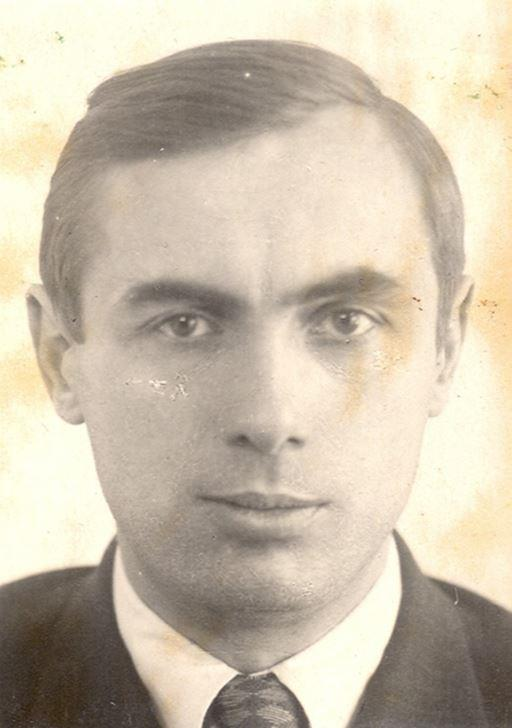
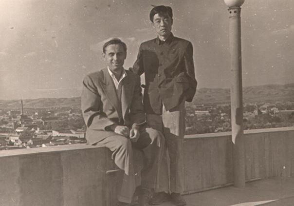
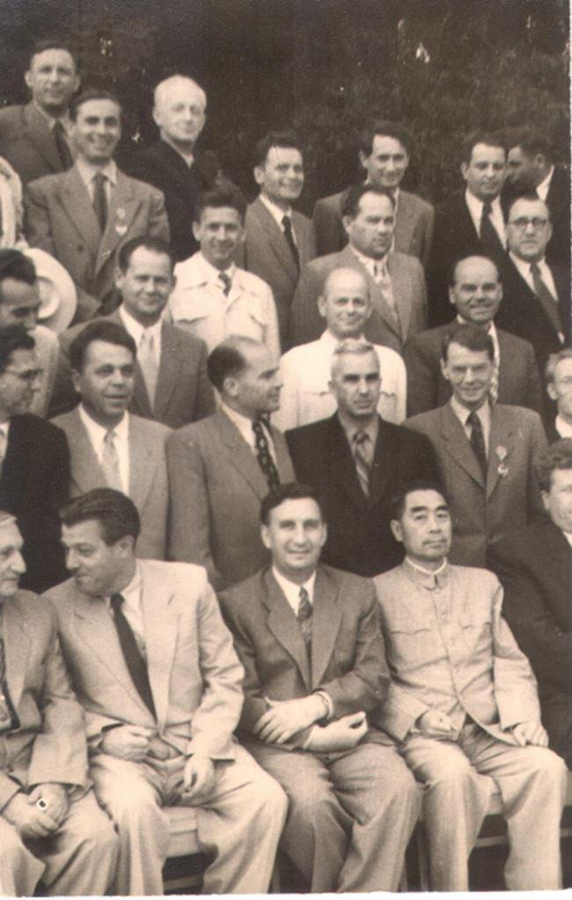
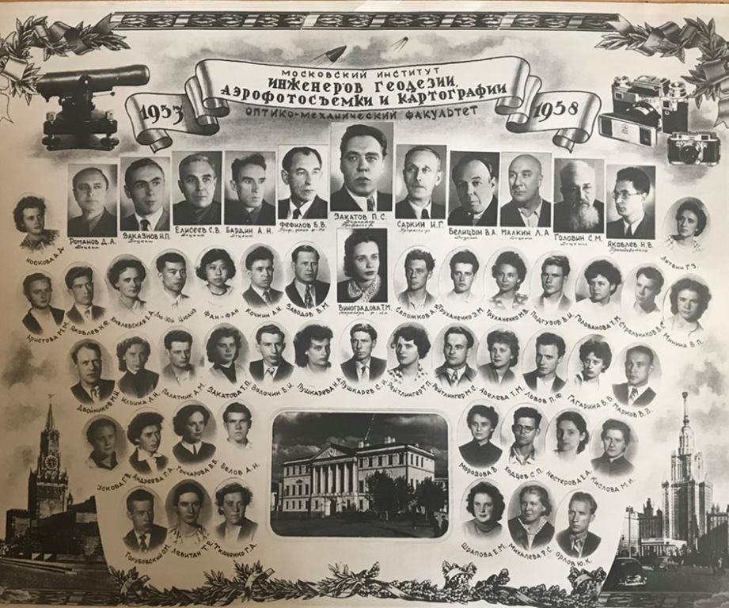
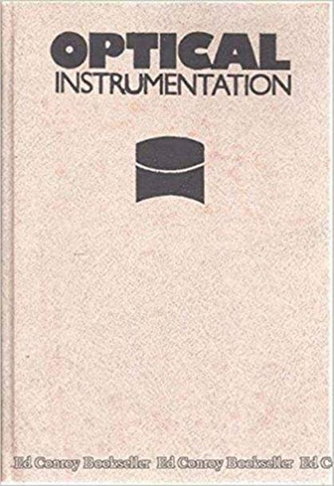
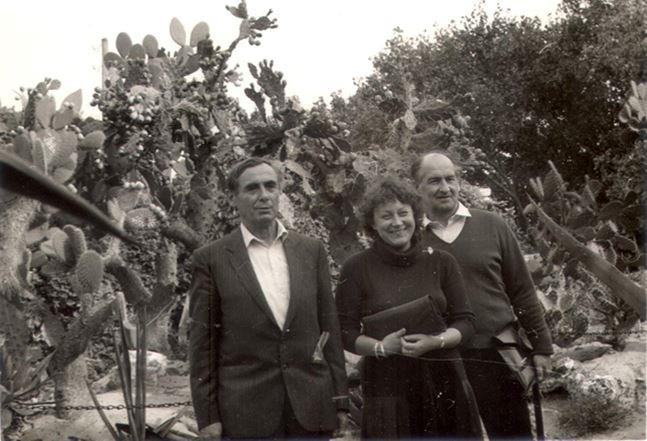
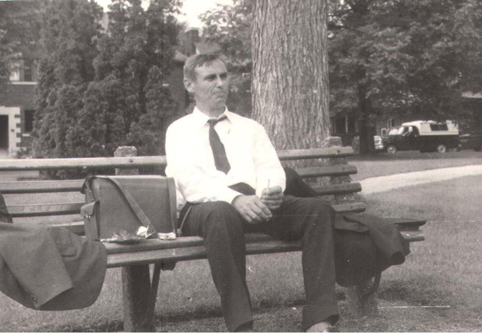

Le 12 décembre 2020 marque le 100ème anniversaire de la naissance d'un scientifique exceptionnel inventeur dans le domaine de l'instrumentation et de l'éducateur, gagnant du Prix d'État de l'URSS, honorable scientifique et technique de la Fédération de Russie, Docteur en Sciences techniques, le professeur Nikolay Petrovich Zakaznov.
N.P. Zakaznov est né à Moscou. En 1938, il entre à l'Institut de mécanique et de construction de machines de Moscou N.E. Bauman (anciennement « École technique impériale » ; puis « École technique supérieure de Moscou » (de 1918-1930 et à nouveau à partir de 1943) qui est désormais appelée « Université technique d’État de Moscou ».
Pendant les années de la Grande Guerre Patriotique de 1941 à 1945, il a été rappelé à l'institut et collaboré dans ce cadre avec l'académicien Nikolai Grigorievich Bruevich afin de travailler sur la conception de bombes aériennes spéciales.
Par la suite, N.P. Zakazov a obtenu son diplôme d'ingénieur d'État de Moscou en géodésie, photographie aérienne et cartographie (MIIGAIK ; ancien Institut impérial de l'intérieur de Konstantinovsky ; maintenant l'Université d'État de géodésie et de cartographie de Moscou), après quoi il est resté dans l'institut pour la préparation et la soutenance de son mémoire pour le diplôme académique en sciences techniques. Un diplôme pré-doctoral qu’il obtient en 1948.
En 1956-1957, N.P. Zakaznov était en voyage d'affaires en République populaire de Chine, où il enseignait à l'Institut polytechnique de Beijing, à Shanghai et à Hangzhou.
En 1964, il soutient sa thèse de doctorat.

N.P. Zakaznov (deuxième dans la rangée du haut) dans un groupe de scientifiques de l'URSS lors d'une réunion avec le chef du Conseil d'État de la République populaire de Chine Zhou Enlai (assis à droite au premier rang)
En 1965, il devient chef du département des instruments de l'Institut des ingénieurs de géodésie, de la photographie aérienne et de la cartographie.
En 1967, après le décès du chef du département d'optique appliquée de la faculté d'établissement de l'Université technique d'État de Moscou. N.E.Bauman, Nikolay Petrovich Zakaznov est élu, sur recommandation du grand spécialiste dans le domaine de la production optique Ivan Afanasevich Turygin, comme nouveau chef de ce département. Il s'installe au MVTU et dirige le département jusqu'en 1988.
Le professeur N.P. Zakaznov a apporté une contribution importante au développement des équipements spatiaux, a été en étroite coopération avec les premiers astronautes et a participé à leur préparation pour les vols spatiaux.
N.P. est l'auteur de 200 œuvres publiées et de plus de 20 certificats de droit d’auteur pour les inventions d'appareils optiques uniques. Ses œuvres sont traduites en anglais, allemand, italien, espagnol, chinois, hongrois, tchèque, polonais, bulgare.
Il faut surtout noter son livre (co-écrit avec avec S.I. Kirushin et V.I. Kuzichev) « Theory of optical Systems », pour lequel les auteurs du comité central du Parti communiste de l'URSS du 6 novembre 1985 ont reçu le prix de l'État de l'URSS. Le livre a été traduit en anglais et en espagnol et est toujours en demande. En 2008, sa quatrième édition a été publiée dans la maison d'édition ′′ Lan ′′
Nikolai Petrovich Zakaznov a également été récompensé Titre honorifique « Travailleur honoré des sciences et technologies de la RSFSR ».
N.P. Zakaznov était l'ami de mon grand-père Petr Sergeevich Zakatov (1907-1977) et a apporté un soutien moral et productif à notre famille après la mort de mon - mon père Nikolai Petrovich Zakatov (194grand-père, et également de son plus jeune fils 6-1981). Ma mémoire conservera toujours un merveilleux souvenir de son attitude aimable et attentionnée, de son soutien pédagogique et de ses conseils de vie avisés.
N.P. Zakaznov a visité beaucoup de temples orthodoxes. Son appartement avait des icônes. Je conserve avec soin le livre sur les enseignements de Saint Jean Zlatoustoy qu’il m’avait offert dans une église. Il percevait avec beaucoup d'intérêt et de joie le début du retour de la Maison impériale russe dans la vie publique de notre patrie.
Dans la dernière année de sa vie, N.P. Zakaznov a été gravement malade et a enduré courageusement la souffrance.
Il est décédé le 13 janvier 1995. Le chant a eu lieu dans l'église des saints premiers Apôtres Pierre et Paul puis a été inhumé au cimetière Vvedensky de Moscou.
Accorde le repos éternel, Seigneur, à Son serviteur Nikolai, et fais-lui une mémoire éternelle.
Partager cette page